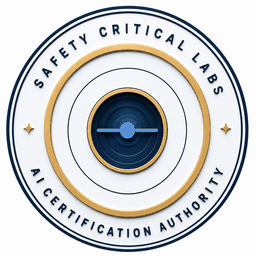

Safety Critical Labs
AI Certification Authority
Certificate of Conformance
This is to certify that
System Name
Organization · Version X.X · Assessed Month YYYY
has been formally assessed against the
SCL AI Requirements Framework
and certified at the Safety Critical level for the operational claim stated below.
Operational Claim
One sentence operational claim describing the certified role and intended scope of the system.
Certificate No.
SCL-CERT-2025-001
Issued
DD Mon YYYY
Framework DOI
10.5281/zenodo.20060591
Principal
Safety Critical Labs
Independent Certification · Safety Critical Labs